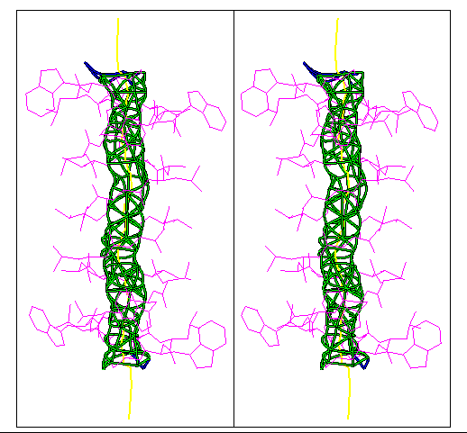

Pore Dimensions of Ion Channels: the pore surface of gramicidin A


The pore surface of gramicidin A
HOLE was applied to the NMR structure of
the channel form of gramicidin determined by Arseniev and
co-workers14.
The HOLE surface is coloured so that parts
of the channel whose pore radius is below 1.15 Å - which is
the minimum radius to accommodate a water molecule - are red.
Where the pore radius is above 2.3 Å
- sufficient to fit two water molecules in side by side
the surface is blue. The intermediate zone
with a pore radius sufficient to fit just one water molecule
will be displayed in green. In this case the hole surface has
no red parts showing that a water molecule can fit through the channel.
Only the ends of the channel have blue surface showing that the
Arseniev gramicidin structure is consistent with the single
file water picture of gramicidin. The sphere surface is shown as
a curved grid (sphagetti) representation. The picture was produced
using the program qplot which is supplied as part of HOLE package.

Oliver S. Smart
(last modified 23/9/96)